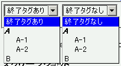
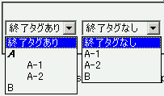

終了タグを省略したoption要素の直後にoptgroup要素があるとき、そのoptgroup要素は無視される。
<form> <div><select> <option>終了タグあり</option> <optgroup label="A"> <option>A-1</option> <option>A-2</option> </optgroup> <option>B</option> </select> <select> <option>終了タグなし <optgroup label="A"> <option>A-1 <option>A-2 </optgroup> <option>B </select></div> </form>
同じ構成のselect要素を、option要素の終了タグを置いた場合と省略した場合で比較しています。
Netscape7.1標準モード
WinIE6.0標準モード
WinIE6.0標準モード、WinIE6.0互換モードで不具合の発生を確認しました。